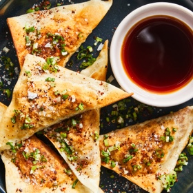

← All recipes
Kimchi Napjak Mandu (Flat Dumplings)

Servings: 50 to 60 dumplings · Prep: 15 min · Cook: 1 hr 45 min
Ingredients
- ¼ cup soy sauce
- 2 tablespoons rice vinegar
- 2 teaspoons sugar
- 3 ounces dangmyeon (Korean sweet potato glass noodles; see Tip)
- 1 packed cup drained, very ripe kimchi, finely chopped (about 10 ounces)
- 4 large scallions, finely chopped, plus more for serving
- 4 teaspoons coarse gochugaru (see Tip), plus more for serving
- 4 teaspoons soy sauce or fish sauce
- 2 teaspoons toasted sesame oil
- ¼ teaspoon sugar
- Salt
- 50 to 60 store-bought or homemade 3-inch square wonton wrappers
- Olive or neutral oil, such as canola or vegetable, for frying
- Flaky sea salt, for serving
Directions
- Make the dipping sauce, if using: In a bowl, stir together the soy sauce, vinegar, sugar and 2 tablespoons of water; set aside.
- Make the mandu: Bring a large pot of water to a boil. Cook the noodles according to package directions, about 8 minutes. Using tongs, transfer the noodles directly to a colander to drain and cool slightly, about 1 minute, leaving the remaining water in the pot. Finely chop the noodles and add to a medium bowl.
- To the bowl with the noodles, add the kimchi, scallions, gochugaru, soy sauce, sesame oil and sugar. Stir to combine, then season to taste with salt.
- Assemble the dumplings: Using a mini cookie scoop or a spoon, plop about 2 teaspoons of the filling in the center of a dumpling wrapper. Dip your fingertips into a bowl of water and wet the four edges; fold the dumpling in half diagonally to create a triangle, pressing the edges to seal. Transfer to a large parchment-lined sheet pan and repeat with the rest of the filling and dumpling wrappers. (If you’re not cooking off the dumplings right away, you can freeze them on the sheet pan at this step, then, once frozen, transfer to a resealable bag and freeze for up to 2 months.)
- Bring the pot of water to a boil again and, working in batches and without crowding the pot, boil the dumplings until their wrappers go from looking matte to shiny (the dumplings may float, as well), about 2 minutes. Using a slotted spoon or spider, transfer the dumplings to a plate. If you have a microwave, microwave them on high for 20 to 30 seconds to turn any residual water to steam, or simply drain them on a paper towel. This optional microwaving step also removes any water and air bubbles inside the dumplings, so the wrapper tightens around the filling.
- Heat a large nonstick skillet over medium, then add enough oil to lightly coat the bottom. Fry the dumplings in batches, flipping once or twice, until a little crispy and lightly browned on both sides, 3 to 5 minutes per batch. They may balloon during this process (that’s a good thing). Transfer to a paper towel-lined plate.
- To serve, sprinkle the dumplings with some finely chopped scallions, gochugaru and flaky sea salt. Enjoy with the dipping sauce.
Original source: cooking.nytimes.com